The Algorithm Engineer's Worldview Test
If I type “How to improve my machine learning models” into Google, I can find a huge variety of techniques for improving model performance: hyperparameter tuning, feature engineering, ensembles, data augmentation, and much more.
But if I add one constraint and ask, “What improves model performance the most?”, the question changes. It is no longer simply an engineering problem of listing and stacking techniques; it becomes an art of deciding where to spend limited effort.
A recent Reddit discussion asked exactly this question: “In your experience, what has the greatest impact on the performance of a machine-learning model—hyperparameter tuning, feature engineering, ensembling, or something else?”
Put differently, there are many ways to improve a model, but as an algorithm engineer, where should I invest my limited time to get the largest return?
Before reading further, imagine a quick poll. What is the first thing you think an algorithm engineer should care about most?
Data Is King
If your answer matches the Reddit discussion, data wins by a large margin. The top comment—“It is data, young Jedi. The data.”—received 571 upvotes.
Many other responses also argued that data is the dominant factor. One invoked the familiar principle “Garbage in, garbage out”: the quality of the entire task ultimately begins with the quality of the data.
Of course, someone jokingly modified the phrase to “Garbage in, state of the art and free money out.”
An algorithm engineer with ten years of experience offered the same lesson from practice.
Another commenter argued that time invested in data work usually produces the highest return.
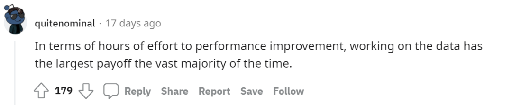
And one response made the same point indirectly with a friendly reminder: “Be nice to the students who label your data.”
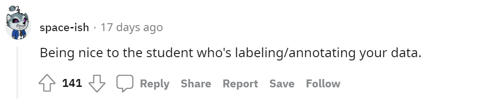
Feature Engineering
Some commenters proposed an empirical ordering. Two answers independently suggested that, when trying to improve performance, the priority should generally be data first, feature engineering second, and model-level work last, including model choice and hyperparameter tuning.
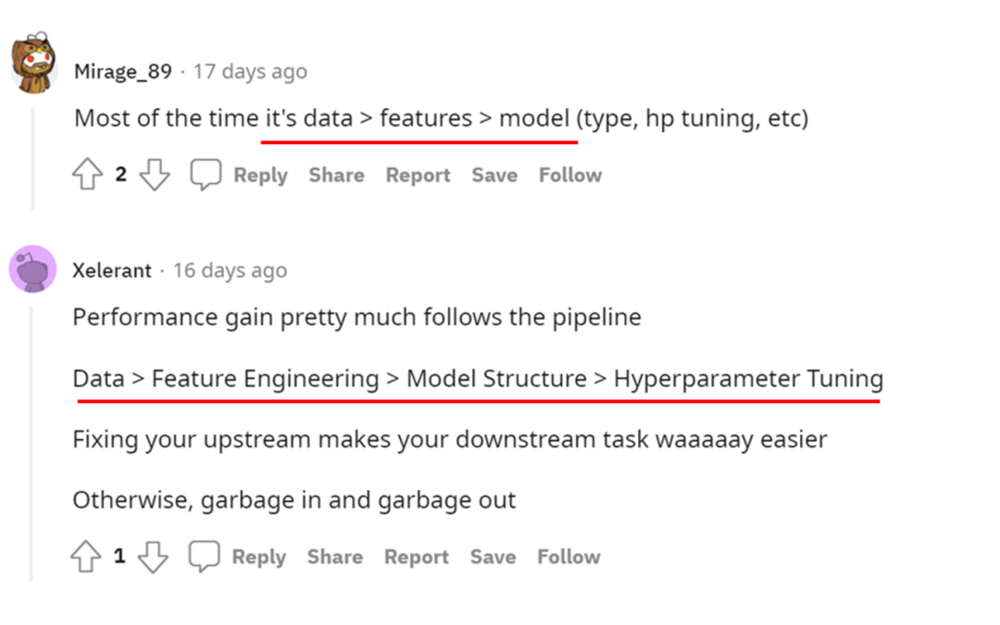
Another commenter described model improvement as a process of finding a sweet spot between increasing the amount of data and reducing unnecessary model complexity.
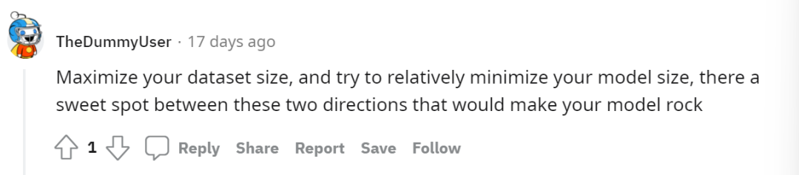
Although “data is most important” was the mainstream answer, several alternatives were also compelling. Some voted for feature engineering, arguing that feature engineering is how you obtain the right data representation to feed into the right model.
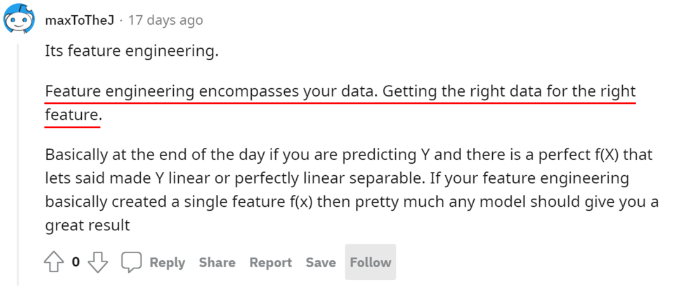
Another response emphasized that ensembling will often improve performance, although the author still regarded feature engineering and tuning as more important.
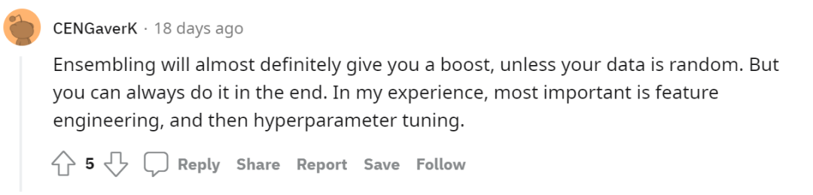
Others pointed out that not every task needs heavy manual feature engineering and highlighted the role of pretraining in deep learning.
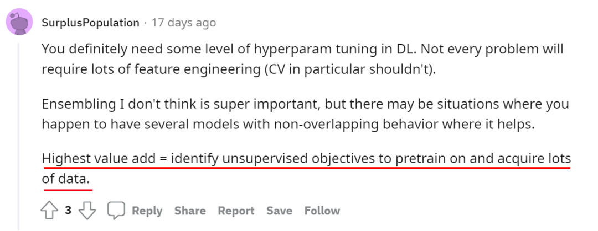
Reframing the Problem
Beyond familiar techniques such as better data, better features, or better models, one commenter proposed a different answer: reframing the problem itself may matter even more. How a problem is defined can dramatically change how solvable it is.
The commenter proposed a simple heuristic: from raw data, through preprocessing, to the final trained model, the process should move in a direction that does not demand information the data never contained. The author called this “entropy,” using the word loosely to mean “whatever you can't measure in a system.”
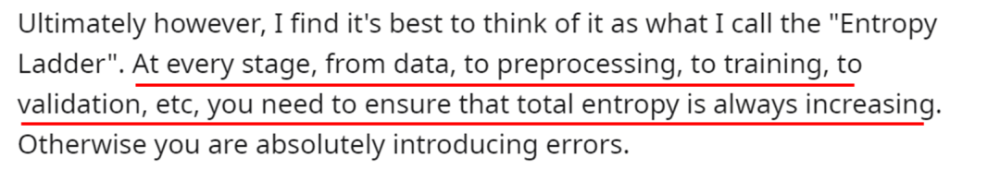
Suppose your raw data contains five years of daily average temperatures. If you define the task as predicting the future day's maximum and minimum temperatures, the model cannot reliably learn those quantities because the original data never measured daily maxima or minima. If the task remains “predict future daily average temperature,” the target is aligned with the information in the data.
You could also simplify the task by reframing it as classification: predict whether the future average temperature will be below −10°C, between −10°C and 10°C, or above 10°C. Because the problem is easier, this formulation may yield a better-performing system.
The broader point is that spending time reformulating a problem until it is defined correctly can sometimes be more valuable than optimizing a model inside a poorly chosen formulation.
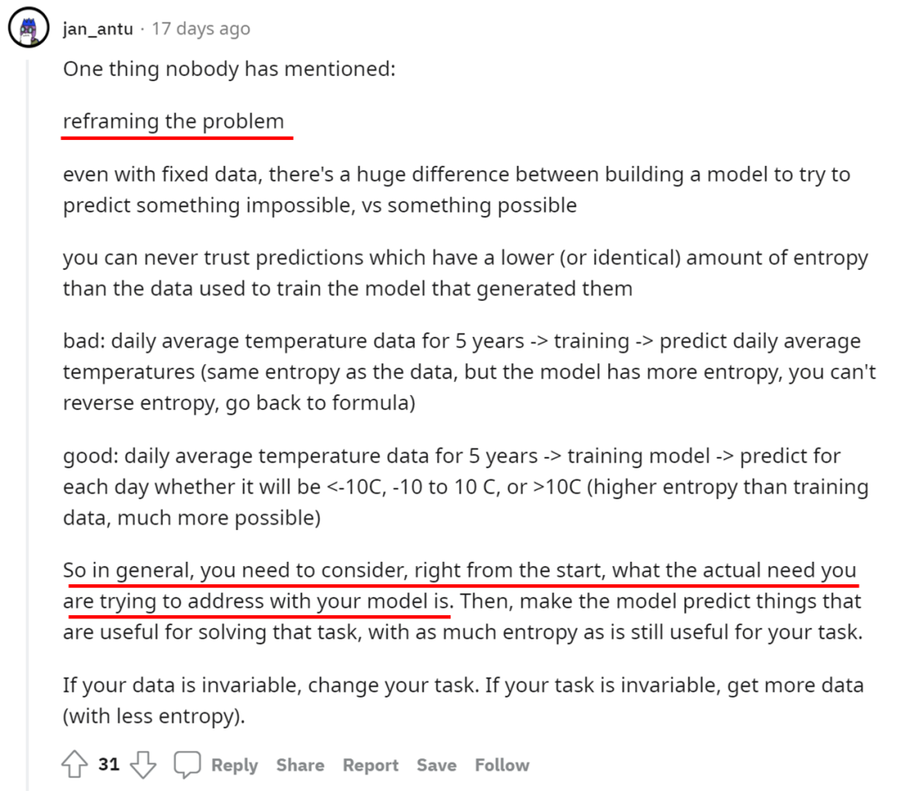
Naturally, this heuristic triggered its own discussion. What exactly should “entropy” mean here? It may be intuitive in a toy example, but how should we reason about it when there are enormous datasets and hundreds or thousands of features? Those questions are part of what made the original discussion interesting.
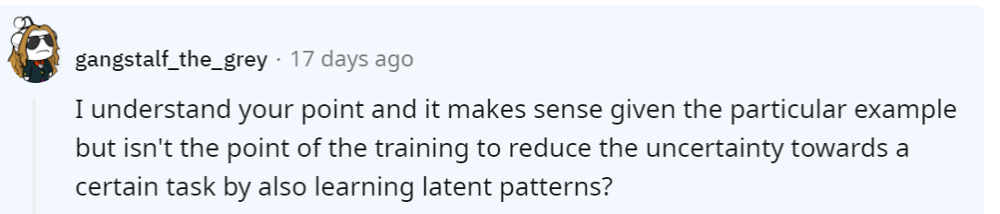
Other Views
The strong consensus around data also prompted a useful counter-question: if data matters most, does that make the other methods unimportant? Obviously not. In real projects, obtaining more or better data may be impossible, and other tools can become decisive.
For example, model-level interventions are often ranked last in generic advice, but in a specialized application placing an attention layer in exactly the right location can produce far more value than adding a large amount of irrelevant data.
Looking back at the history of AI, many milestone improvements came from new model architectures. As one response put it, most architecture changes may fail to help without enough good data—but when one truly works, it can be a game changer.
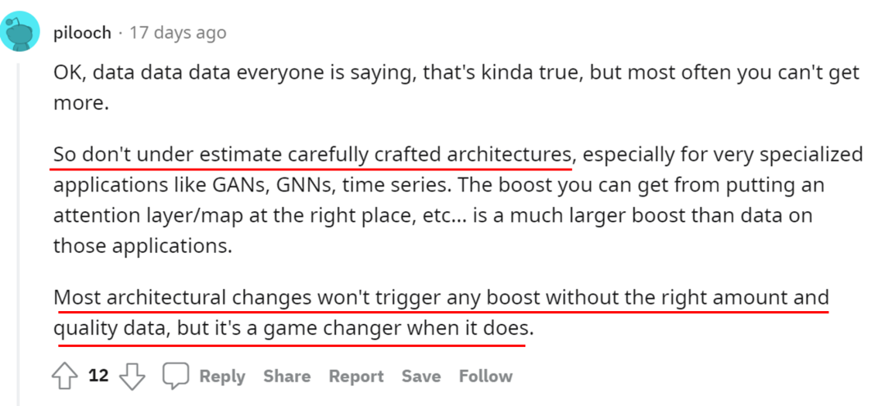
The “data first” answers also raised a deeper question: what do we actually mean by data work? In highly specialized domains, if the most valuable “creative” contribution of an algorithm engineer is continually obtaining more and better labeled examples, where do those better labels come from? Often, from domain experts. As algorithms and tooling become easier to use, what is the lasting advantage of an algorithm engineer over a domain expert who also understands the algorithms?
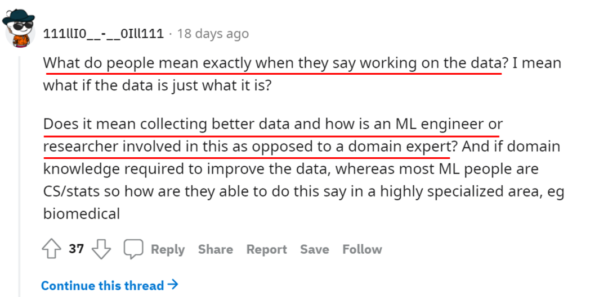
An optimistic answer is that domain expertise and algorithmic implementation remain partly separable. The engineer can receive labeled data, construct a model, and return predictions. “Data work” may mean collecting more samples, augmentation, cleaning, and related operations. Even though an algorithm engineer should understand the problem domain, the engineer and the domain expert can still occupy different roles in the division of labor.
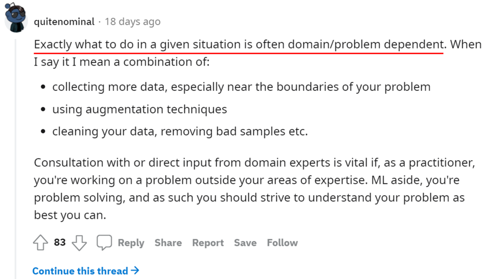
A more pessimistic answer is that much of the “better data” an engineer receives is actually produced by better labeling. From this perspective, some of the current value—and high salaries—of algorithm engineers may reflect the fact that machine-learning tools are not yet mature enough for domain experts to use them freely on their own.
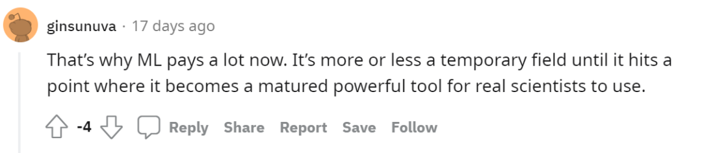
These arguments lead to a more fundamental question: what is the core competence of an algorithm engineer? Should the emphasis be on the “algorithm” or on the “engineer”?
One response offered a useful perspective. Algorithm engineers are often tightly associated with machine learning and deep learning, but solving a problem does not necessarily require machine learning at all. Instead of defining the profession around a specific class of algorithms, it may be better to emphasize the engineering role: choose tools that solve the problem, whether the right tool is exhaustive search, statistics, optimization, or machine learning.
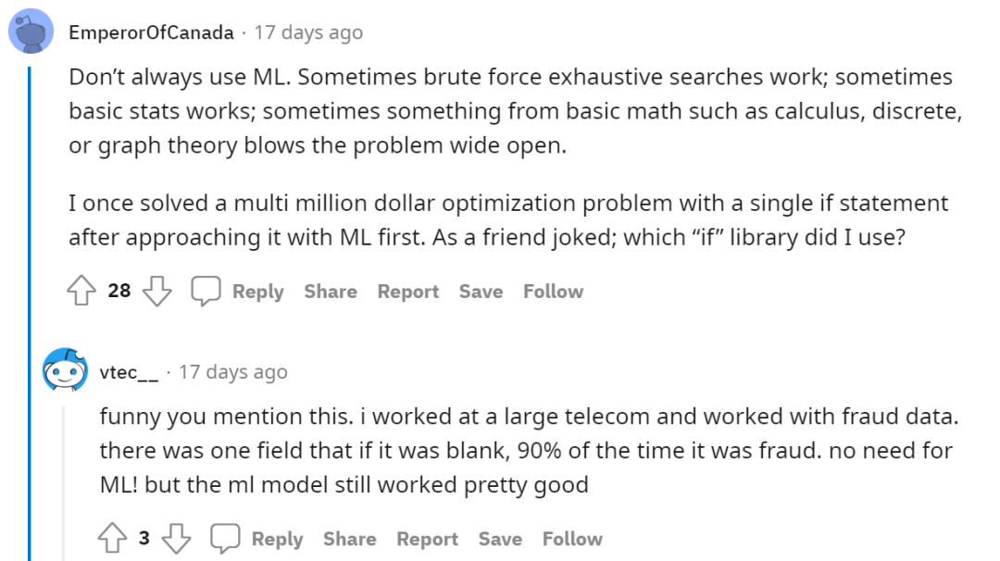
Neither models nor data are universal magic bullets. What an algorithm engineer may need most is the ability to solve the actual problem under the specific constraints of time, resources, and context.
That is a more active process than blindly tuning hyperparameters, cleaning data, or modifying architectures. Instead of memorizing whether effort “should” go to data, features, or models, ask what is wrong in the current system and select the tool that addresses that bottleneck.
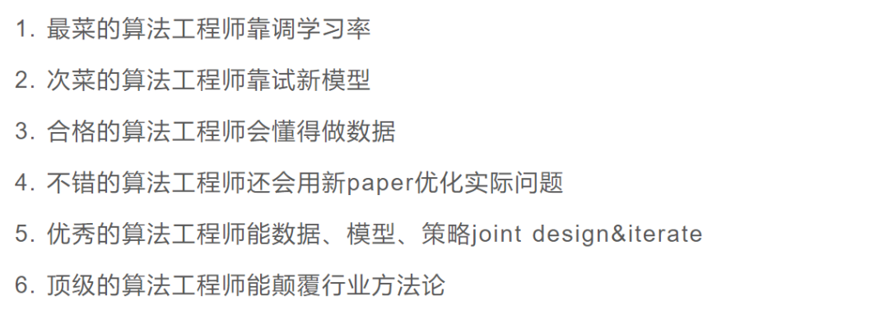
A Final Thought
Management has a classic “five whys” style example. A factory machine fails. Why? A screw came loose. Why did the screw come loose? It had not been lubricated. Why was there no lubricant? The worker had not maintained the machine on schedule. Why was maintenance not performed? Perhaps the management system neither required nor incentivized regular maintenance.
If we stop after the first “why,” a loose screw may look like an unavoidable random event. If we keep asking why, the same problem can eventually become something that can be addressed through system design and management.
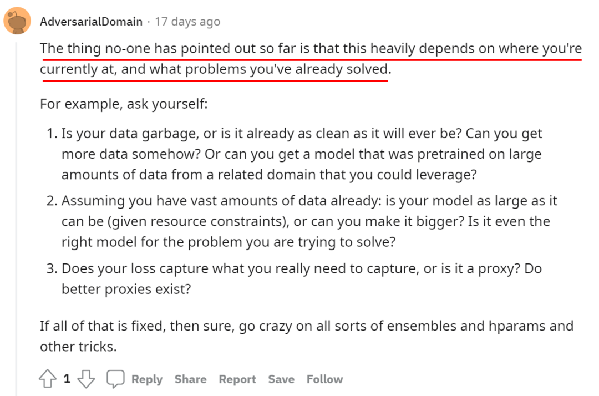
Model optimization is similar. When facing the question “My model performs poorly—how should I improve it?”, it may be more useful to ask “What problem am I actually facing right now?” rather than mechanically trying every technique from data cleaning to architecture changes. If the bottleneck is data, fix the data. If it is the model, fix the model. If the task itself is badly framed, redefine it.
Then the answer to the original question may no longer be “data,” “features,” or “models.” It may simply be:
“You, young Jedi. It is you.”